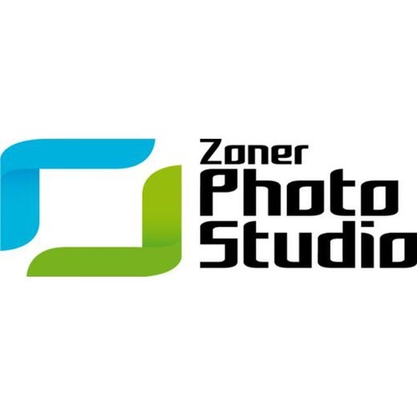
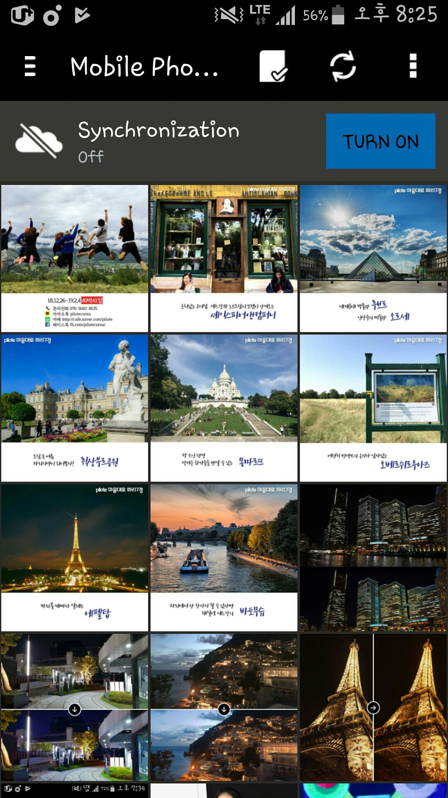
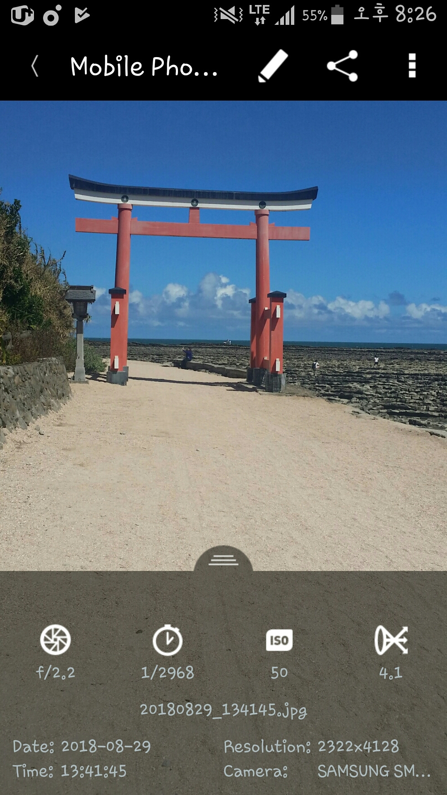
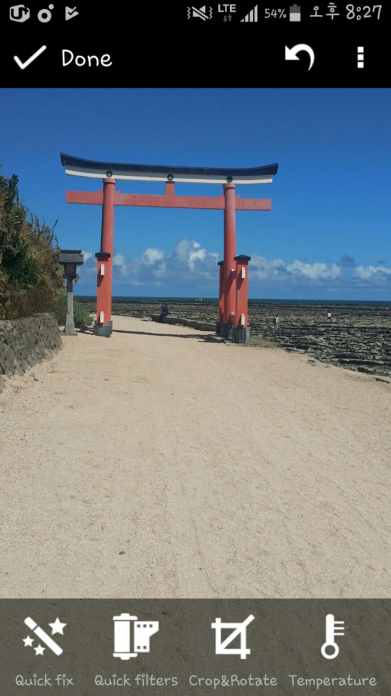
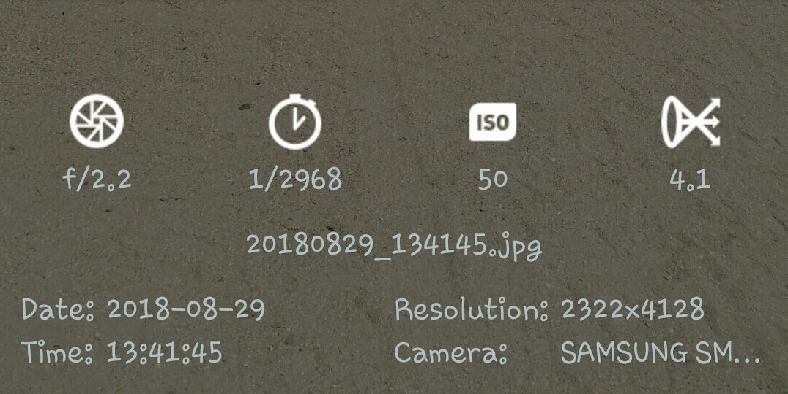
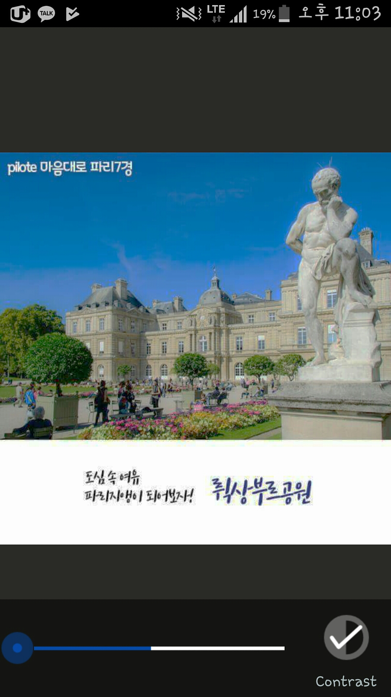
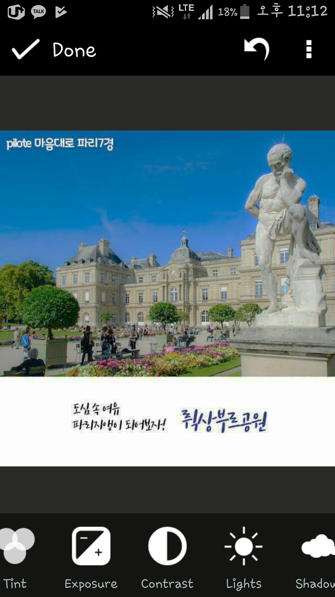
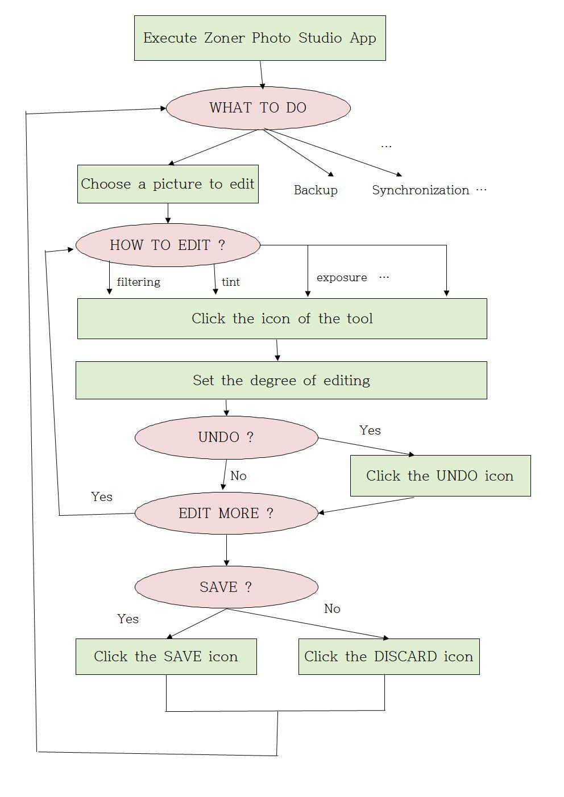

I. Requirement Analysis
1. Objective of the Application
나는 출시된 Photo Organizer 제품들 중 평가가 상당히 좋은 Zoner Photo Studio 라는 제품의 모바일 어플리케이션 버전을 리뷰 대상으로 선정하였다.
  
ZPS의 인터페이스를 살펴보면, 우선 앱을 실행시켰을 때 첫번째 사진에 해당하는 메인 화면이 나타난다. 다른 Photo Organizer들과 동일하게 저장소에 저장된 사진을 읽어 Grid-view 형식으로 화면에 나타낸다. 상단에 위치한 탭에 Check, Refresh, Edit, Share 등의 기능이 아이콘 단추 형식으로 제공된다. 사진을 클릭하면 해당 사진만 큰 화면으로 보여주고, 관련된 Title, Date, Resolution, Time 등의 정보를 사진 파일에서 읽어와 하단 탭에 띄운다. 여기서 상단의 Edit 아이콘을 클릭하면 Edit 화면으로 넘어가고, 하단에 Editing Tool들을 아이콘과 텍스트 형식으로 제공한다.

여기서 앱의 전체적인 인터페이스를 고려했을 때, 위의 화면에서 Date, Resolution, Time 등을 아이콘 형식이 아닌 텍스트 형식으로 보여주는 부분이 일관되지 못하게 느껴진다. Date, Resolution 등과 같은 텍스트 대신 적절한 아이콘으로 대체하면 더욱 일관성 있게 개선될 것이다. 반대로 4개의 아이콘으로 특정 정보를 나타내는 부분이 있는데, 이 부분은 일관성은 있지만 날짜나 픽셀사이즈 등과 달리 f/2.2, 1/2968 등으로 표현되어 있어 ZPS를 처음 사용해보거나 익숙하지 않은 사용자들은 이 부분이 어떤 정보를 나타내는지 이해하지 못할 가능성이 높다. 실제로, 나 또한 저 부분이 어떤 정보를 나타내는 지 이해하지 못하였다. 즉, 여기서는 3번째 사진 하단의 Editing Tools 인터페이스처럼 작은 텍스트 인터페이스도 함께 제공하거나, 약간 inconsistent하더라도 아이콘을 텍스트로 대체하면 novice level의 사용자들도 손쉽게 이해할 수 있게 개선될 것이다. 다른 방법으로는, 아이콘으로 보여주고 해당 아이콘을 클릭하면 Toast메시지를 띄워 해당 정보가 무얼 의미하는지 알려주는 방식으로 개선할 수 있을 것이다.
User의 관점에서 더욱 구체적으로 살펴보기 위해, Mental Model을 고려해보았다. 대부분의 유저들이 Photo Organizer Application에 대해 가장 기대하는 Task는 아마 사진 편집일 것이다. 따라서 앱이 제공하는 많은 Task가 있지만, 그 중 사진 편집 Task가 이루어지는 과정을 보면 다음과 같다.
 
편집할 사진을 선택하는 것은 매우 직관적이고 누구나 쉽게 할 수 있다. 편집할 사진을 선택하고 나면 편집 단추를 클릭해야 하는데, 이는 연필 모양으로 이루어져 있어 대부분 쉽게 알아챌 수 있겠지만 Photo Organizer 자체를 한번도 이용해 보지 않은 novice 수준의 사용자들은 약간의 시행착오가 생길 수 있고 따라서 Training Cost가 발생할 수 있다. 편집 단추를 클릭하면 편집 화면으로 넘어가는데, 여기서는 편집 도구들이 텍스트 형식으로 함께 제공되므로 novice 수준 사용자들도 손쉽게 사용할 수 있다. 편집을 하고 나면 완료를 해야 하는데, 화면을 보면 체크모양의 아이콘만 표시되지만 Editing bar 이외에 어떠한 인터페이스도 없기 때문에 완료를 의미한다는 것을 직관적으로 알 수 있다. 편집을 완료하고 나면 마찬가지로 체크 아이콘을 눌러 저장을 할 수 있다.
결론
Inconsistency : 아이콘이 아닌 텍스트를 사용하여 앱의 전체적인 Consistency를 해침. 아이콘으로 대체하거나 텍스트 사이즈와 폰트를 조정하여 간단히 해결할 수 있을 것으로 보임.
Necessarity to learn for novices : 앱에 익숙하지 않은 초심자 레벨의 사용자들이 이해하기 어려운 아이콘이 사용됨. 텍스트로 대체하거나 info버튼을 만들어 해결할 수 있을 것으로 보임.
2. Decision Tree
Zoner Photo Studio 앱은 사진편집 이외에도 사진 백업, 동기화, postcard 생성 등 다양한 기능을 제공하지만, Decision Tree가 너무 커지는 것을 막기 위해 편집 작업에 포커스를 맞춰 Decision Tree를 그려보았다.

3. Apply the GOMS Methodology
ZPS 앱에서 사진편집 작업의 실행시간을 GOMS Methodology에 따라 예측해 볼 것이다. 여기서 예측한 시간과 실제 걸리는 시간을 비교하기 위해 Shadows 옵션을 편집하는 작업을 예시로 비교를 진행하겠다. 편집할 사진을 선택하는 작업은 상황에 따라 크게 달라질 수 있어 사진선택 이후의 과정만을 고려하였다. 디바이스는 스마트폰이라고 가정하였고, 모바일 환경이라 마우스 이동 대신 손가락을 사용하므로 손가락을 이동하는데 걸리는 시간을 H라고 가정하였다.
1. 편집 아이콘으로 손가락 이동 (H)
2. 편집 아이콘 터치 (B)
3. 어떻게 편집할 지 생각 (M)
4. 하단 bar에서 Shadows아이콘이 나올 때까지 스크롤 (3H로 예측)
5. Shadows아이콘으로 손가락 이동 (H)
6. Shadows아이콘을 터치 (B)
7. 얼마나 조절할 지 생각 (M)
8. Shadows 게이지 조절 버튼으로 손가락 이동 (H)
9. 게이지 조절 (H)
10. Complete아이콘으로 손가락 이동 (H)
11. Complete 아이콘 터치 (B)
12. Save 아이콘으로 손가락 이동 (H)
13. Save 아이콘 터치 (B)
14. 저장완료까지 기다림 (W(1))
이를 토대로 실행시간을 예측 해보면 9H + 4B + 2M + W(1) = 3.6 + 0.4 + 2.4 + 1.0 = 7.4 초 라는 결과가 나온다. 실제로 스마트폰에서 위의 작업에 대한 실행시간을 측정해 보았더니 8.06 초라는 예측과 비슷한 결과가 나왔다.
4. S Pen of the Samsung Galaxy Note 9
Galaxy Note 9의 S Pen은 오직 입력만 가능한, Communicative I/O device이다. 스마트폰 본체와 S Pen은 블루투스로 무선 연결되어 있어 S Pen에서 Signal (Interrupt)를 보내면 본체에서 인식이 가능하다. S Pen에서 버튼을 눌러 인터럽트를 발생시키면, 해당 인터럽트는 블루투스를 통해 본체로 전달된다. 그와 동시에 Interrupt Controller가 인터럽트가 발생했음을 인식하여 Interrupt Handler에게 요청을 보낸다. Interrupt Handler는 미리 정해진 처리 루틴에 따라 인터럽트를 처리한다.